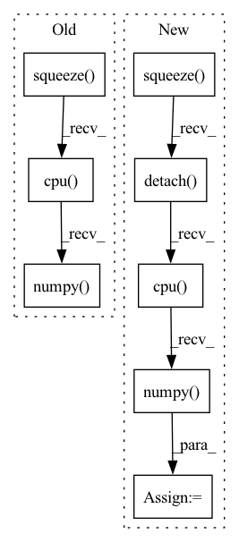

Pattern ID :10310
Before Change
match_img2 = convert_plt_to_tensor()
// Draw scores
scores = out["scores"][-1].squeeze().detach().cpu().numpy()
plt.imshow(scores, cmap="inferno")
plt.colorbar()
plt.title("log inverse variance (weight score)")
score_img = convert_plt_to_tensor()After Change
scores = out["scores"][-1]
if scores.size(0) == 3:
scores = scores[1] + scores[2]
scores = scores.squeeze().detach() .cpu().numpy()
plt.imshow(scores, cmap="inferno")
plt.colorbar()
plt.title("log det weight (weight score vis)")
score_img = convert_plt_to_tensor()In pattern: SUPERPATTERN
Frequency: 3
Non-data size: 8
Instances Fragment ID: 36296537
Project Name: utiasasrl/hero_radar_odometry
Commit Name: c1043c84c77f1a20b667d981d4cd286cb378c71a
Time: 2021-01-25
Author: david.yoon@robotics.utias.utoronto.ca
File Name: utils/vis.py
M Class Name: AnonimousClass
N Class Name: AnonimousClass
M Method Name: draw_batch_steam(3)
N Method Name: draw_batch_steam(3)
M Parent Class:
N Parent Class:
M File Name: utils/vis.py
N File Name: utils/vis.py
M Start Line: 55
M End Line: 134
N Start Line: 95
N End Line: 122
Before Change
for data in test_loader:
x = data[0].squeeze(0).squeeze(0).detach().cpu().numpy()
y = data[1].squeeze(0).squeeze(0).detach().cpu().numpy()
x_seg = data[2].squeeze(0).squeeze(0).detach().cpu().numpy()
y_seg = data[3].squeeze(0).squeeze(0).detach().cpu().numpy()
x = ants.from_numpy(x)
y = ants.from_numpy(y)
After Change
x_seg = data[2] // .squeeze(0).squeeze(0).detach().cpu().numpy()
x_seg_oh = nn.functional.one_hot(x_seg.long(), num_classes=46)
x_seg_oh = torch.squeeze( x_seg_oh, 1)
x_seg_oh = x_seg_oh.permute(0, 4, 1, 2, 3).contiguous()
x_seg_oh = x_seg_oh.squeeze(0).detach() .cpu().numpy()
y_seg = data[3].squeeze(0).squeeze(0).detach().cpu().numpy()
Fragment ID: 36296541
Project Name: junyuchen245/transmorph_transformer_for_medical_image_registration
Commit Name: 0612d1a704653ff98a92a228ecaefd2023577062
Time: 2022-09-07
Author: jchen245@jhmi.edu
File Name: IXI/Baseline_traditional_methods/SyN/infer_IXI.py
M Class Name: AnonimousClass
N Class Name: AnonimousClass
M Method Name: main(0)
N Method Name: main(0)
M Parent Class:
N Parent Class:
M File Name: IXI/Baseline_traditional_methods/SyN/infer_IXI.py
N File Name: IXI/Baseline_traditional_methods/SyN/infer_IXI.py
M Start Line: 57
M End Line: 86
N Start Line: 58
N End Line: 96
Before Change
with torch.no_grad():
self.sbiobert_model.eval()
encoded_layers, test = self.sbiobert_model(preprocessed_sentence, segments_tensors)
sentence_encoding = encoded_layers[-1].squeeze() .mean(axis=0)
embedding = sentence_encoding.detach() .cpu().numpy()
return embedding
After Change
embedding = self.masked_mean(last_hidden_state,
preprocessed_sentence["attention_mask"])
return embedding.squeeze().cpu().numpy()
def embed_many(self, preprocessed_sentences):
Compute the sentences embeddings for multiple sentences.
Fragment ID: 36296544
Project Name: bluebrain/search
Commit Name: 6eb30c8b3e77791ee4e407dd19d7a5e08fe5e132
Time: 2020-09-04
Author: jankrepl@yahoo.com
File Name: src/bbsearch/embedding_models.py
M Class Name: SBioBERT
N Class Name: SBioBERT
M Method Name: embed(2)
N Method Name: embed(2)
M Parent Class: EmbeddingModel
N Parent Class: EmbeddingModel
M File Name: src/bbsearch/embedding_models.py
N File Name: src/bbsearch/embedding_models.py
M Start Line: 120
M End Line: 127
N Start Line: 193
N End Line: 197